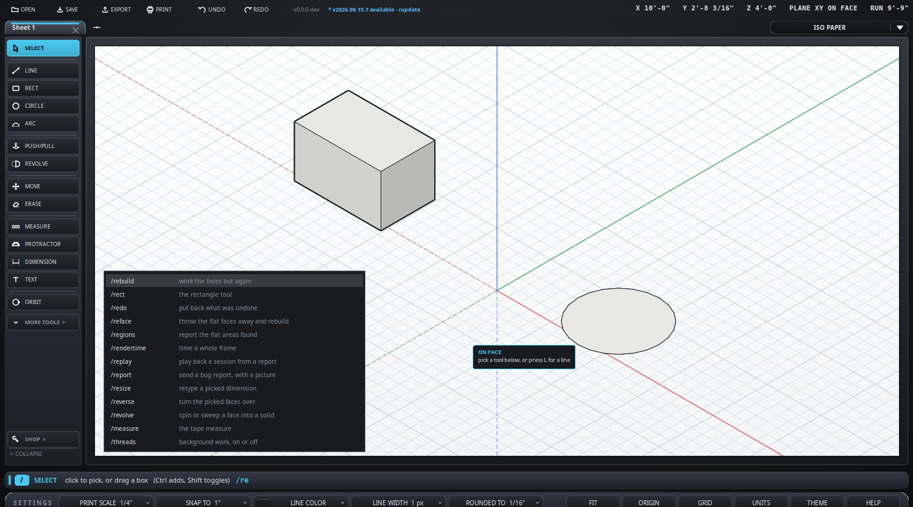

Type a slash and the program tells you what it can do.
SketchUp has no command line. This does, and it is the fastest way to reach anything here: you do not have to remember where a thing lives in a menu, only roughly what it is called. Everything below is on this one page so you can keep it open beside the program.
/re leaves you /rebuild, /rect,
/redo, /reface and the rest: the ones that start with what you typed come
first, then the ones that merely contain it./scale and the line reads
/scale 1/4", which is the bit you would otherwise have come here
to find out./top looks from the top and that is the whole story - but
where there is more to say, the name is a link to it./e for the eraser, /mv for move,
/s for select. They are in the "Also" column below. The list
itself shows one row per action, because three rows of the same thing would
be a worse list - but typing a short name finds its row, and the row says
which name found it: /tape brings up /measure
marked /tape.Seventy-one commands, grouped by what you would be trying to do. The in-program list is alphabetical; this is not, because when you do not know the name, the name is not what you have to go on.
Every one of these just puts a tool in your hand. The "Also" column has the keyboard shortcut, which does the same thing and is quicker once you know it, and any shorter names the command answers to. See the keyboard and the mouse.
| Command | What it does | Also |
|---|---|---|
/select | the select tool | key Space, /s |
/line | the line tool | key L, /l |
/rect | the rectangle tool | key R, /rectangle, /r |
/circle | the circle tool | key C, /c |
/arc | the arc tool | key A, /a |
/push | push or pull a face | key P, /pull, /pushpull, /p |
/drill | push a shape right through | key B, /bore, /punch |
/offset | a parallel copy of a face's edge | key F, /f |
/revolve | spin or sweep a face into a solid | /followme, /follow, /lathe |
/move | the move tool | key M, /mv |
/rotate | the rotate tool | key Q, /q, /turn |
/erase | the eraser | key E, /e, /del |
/measure | the tape measure | key T, /m, /tape |
/dimension | the dimension tool | key D, /dim |
/protractor | lay a guide at an angle | /angle |
/text | a note on the drawing | key N, /note, /n |
/orbit | the free camera | key O, /spin |
Where you are looking from. Every one of these flies the camera there rather than jumping, which is what keeps you from losing your place.
| Command | What it does | Also |
|---|---|---|
/top | look from above | /down |
/front | look from the front | |
/back | look from behind | |
/left | look from the left | |
/light | light that follows the camera, so the face turned towards you is the bright one: on, off. Off is the old fixed lamp for example /light off | /lamp |
/right | look from the right | |
/corner | look from a corner | |
/iso | the isometric view | key I toggles iso and plan |
/plan | look straight down | key I, /2d, /flat |
/fit | zoom until it all shows | key Shift+F, /zoom |
/origin | put the view back on 0,0,0 | /o |
/cube | the view cube: on, off, tl/tr/bl/br for example /cube tr | /viewcube |
/cut | the plan slice: two heights, or "all" for example /cut 0 9' | /slice |
/quick | quick frames while the camera moves |
Moving the whole drawing, or what you have picked,
to somewhere definite. /center and /tozero are
the two a 3D printer cares about.
| Command | What it does | Also |
|---|---|---|
/all | select everything on this sheet | /selectall |
/center | center it on the floor at 0,0 | /center |
/tozero | put its near bottom corner on 0,0,0 | /zero, /tuck |
/resize | retype a picked dimension for example /resize 4'6" | /size |
/reverse | turn the picked faces over | /rev, /flip |
/detach | move a line away on its own: on, off for example /detach on | /loose |
/unfold | lay a piece out flat | /layout |
| Command | What it does | Also |
|---|---|---|
/info | the entity panel: on, off for example /info on | /entity, /properties |
/units | feet and inches, or millimeters | key U |
/scale | the print scale: 1/4", 1" and so on for example /scale 1/4" | |
/plane | the working plane: xy, xz or yz for example /plane xz | key K |
/grid | the ruled paper, on or off | key G |
/guides | clear the guide lines | /noguides |
A face is worked out from the edges that enclose it, not drawn; these are the words for when that needs a nudge, or for finding out why a shape will not print. See solids and 3D printing.
| Command | What it does | Also |
|---|---|---|
/holes | draw where a solid is not closed | /openedges, /notclosed |
/rebuild | work the faces out again | |
/reface | throw the flat faces away and rebuild | /rebuildfaces |
/regions | report the flat areas found | |
/forget | forget the areas seen, and work them out again |
| Command | What it does | Also |
|---|---|---|
/new | a new sheet | key Ctrl+T, /tab |
/close | close this sheet | key Ctrl+W |
/clear | empty this sheet | |
/save | save the drawing | key Ctrl+S |
/saveas | save it under a new name | key Ctrl+Shift+S |
/undo | undo the last thing | key Ctrl+Z, /u |
/redo | put back what was undone | key Ctrl+Y |
/print | this sheet - or "all", or "full" for example /print all | key Ctrl+P |
Two wizards that write geometry for you rather than making you draw it.
| Command | What it does | Also |
|---|---|---|
/transition | build a duct fitting | /trans, /fitting, /elbow, /tee |
/source | this sheet as text, in a window beside the drawing - in Heck, the readable form a drawing will be saved in, shown for looking at only. Pick something on the sheet and its lines light up; click a line, or drag over several, and those things are picked on the sheet. Everything folds; Only what is picked folds everything else shut. Ctrl+click a name goes to where it is defined, resting on it says where it is, Ctrl+F finds, Ctrl and the wheel sizes the text. Untick Version 2 for the file as it is saved today | /src, /text-view |
/spool | the pipe spool scratchpad | /pipe, /scratchpad |
| Command | What it does | Also |
|---|---|---|
/help | about this program | key F1 |
/manual | open the manual | /docs |
/whatsnew | the release notes | /changes |
/update | look for a newer build for example /update never | /upgrade |
/report | send a bug report, with a picture | /bug |
/toy | the etch-a-sketch this program began as | /etch, /etchasketch |
Diagnostics. Harmless, and mostly of interest when something has gone wrong and we have asked you to look.
| Command | What it does | Also |
|---|---|---|
/session | what has happened, most recent last for example /session session.txt | /acts |
/state | what a report says about the program right now | |
/sysinfo | what a report says about this machine | /machine |
/replay | play back a session from a report for example /replay session.txt | |
/threads | background work, on or off | |
/timings | time each step: on, do the slow thing, then again to see them for example /timings show | |
/rendertime | time a whole frame, in a box you can copy from |
/holes draws, in red, every edge where a solid is not
closed - the answer a slicer will not give you. See
solids and 3D printing./center centers what is selected on the floor - across X and
Y, standing on Z zero, which is where a 3D printer's slicer expects to find
it. /tozero stands it on the floor too, with its near bottom
corner on the origin rather than its middle./cube puts a view cube in the top right of a 3D view. Click
a face to look at the model square on, an edge for a half turn between two,
a corner for the three-quarter view most drawings are read from - and drag it
to turn. It also shows which way you are facing, which the VIEW button
cannot. Off until you ask for it, and remembered after that.
/cube tl, tr, bl or br
puts it in whichever corner suits, and /cube fitselection off
stops a click framing what you have picked. With nothing picked it never
re-frames: it just goes to the view you asked for./toy goes to the etch-a-sketch this program began as. The
one button in the corner there brings you back - or /pro, which
works but is deliberately not in the list./manual opens these pages.